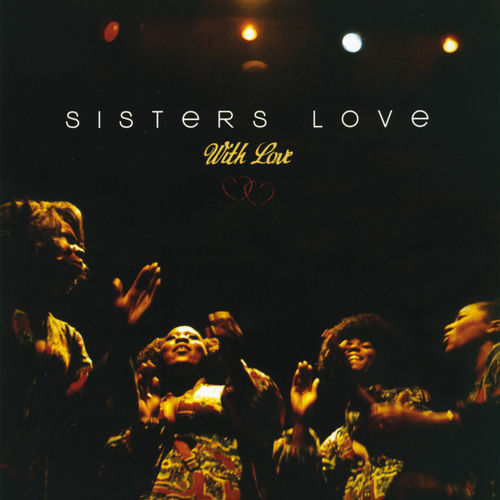

Sisters Love
The Sisters Love was an American R&B and funk ensemble active in the late 1960s and early 1970s.
Complete Discography & Tracklists (2)
2010 With Love 🎵 15 Tracks
2012 A Little Bit of Magic - The Best of Sisters Love 🎵 13 Tracks
✨ Similar R&B / Soul Artists